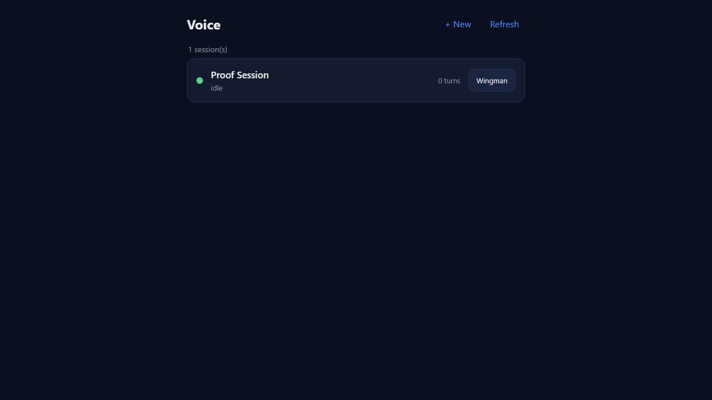
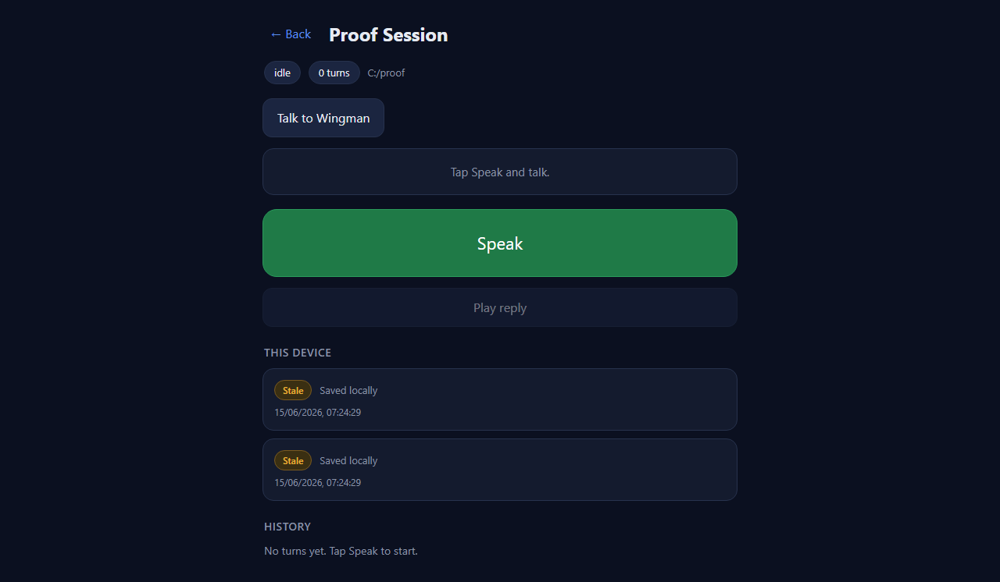
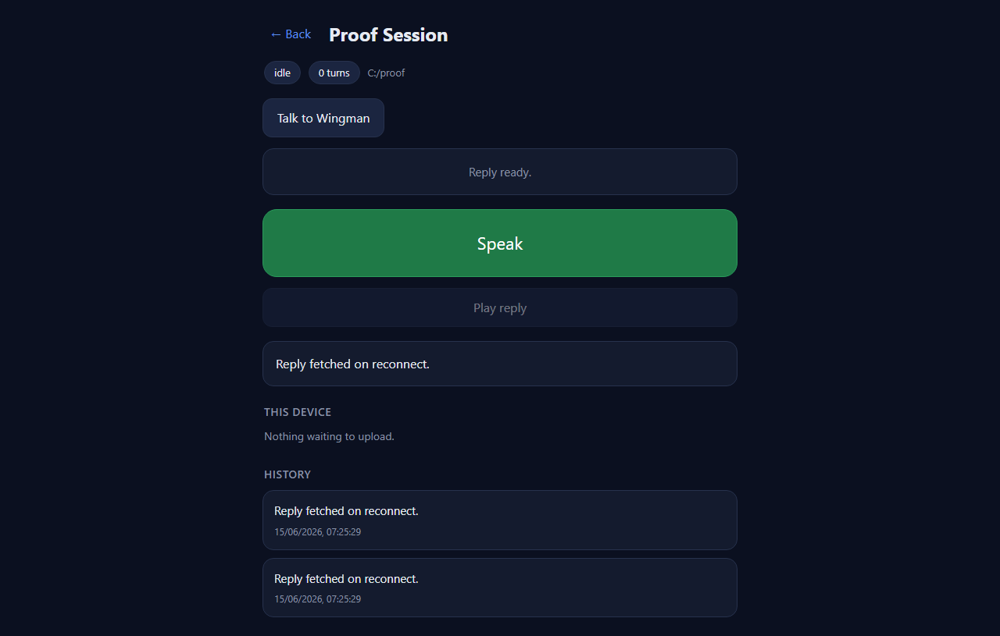

Developer Agent proof. PR base: feat/425-voice-offline1 (stacking). Branch: feat/426-voice-offline2. Option A: NOT merged.
The /voice page now drains its offline upload queue automatically when the
connection returns - no manual Retry tap. A Service Worker scoped to /voice uses
Background Sync (where supported) to wake the page and drain the IndexedDB outbox even when the
tab is backgrounded; on browsers without Background Sync the page falls back to an
online event plus a periodic connectivity probe and drains in-page. On reconnect each
queued turn uploads and its pending reply is fetched. A turn that has been waiting longer than the
30-minute rule shows a "Stale" badge but keeps retrying.
src/CcDirector.Cockpit/wwwroot/pages/voice/sw.js (new) - the Voice Service
Worker. install = skipWaiting(), activate =
clients.claim() so it controls the already-open page. The sync event
(Background Sync tag ccd-voice-drain) asks a controlled client to drain via a
MessageChannel and resolves only when the client reports the outbox empty;
otherwise it rejects so the browser retries the sync later (no fallback that hides a failure).
A message handler lets the page re-register the sync.src/CcDirector.Cockpit/Program.cs - new route GET /voice/sw.js that
serves the worker with Service-Worker-Allowed: / and a text/javascript
MIME. The header is required because the worker is registered with scope /voice
while the page itself is at /voice (no trailing slash), which is above the script's
own /voice/ directory scope. Follows the existing /voice route's
explicit-throw-on-missing-file pattern (no try-catch in a non-boundary).voice.js - initAutoDrain() registers the worker and wires the three
reconnect triggers (Background Sync, the online event, and a periodic probe);
drainOutbox() runs the same resumable upload the manual Retry uses over every
not-yet-uploaded turn (sequential, guarded against overlap) and reports whether the queue is
empty; onSwMessage() answers the worker's drain request; the 30-minute rule
(isStale() + a stale ticker that re-badges by age) marks a long-waiting turn
"Stale" while it keeps retrying. Test hooks window.__VOICE_STALE_MS__ /
__VOICE_PROBE_MS__ shorten the 30-min / 15-sec defaults for proof only.voice.css - .ob-badge.stale token (amber, distinct from the red
.failed) using the page's existing CSS variables.No architecture or security drift. The change adds a client-side Service Worker plus one static
route on the Cockpit, within the same trust boundary the existing /voice page already
relies on (Tailscale-authenticated front door + per-machine Gateway token). No new container, no
new data flow, no change to any DT-* security rule. architecture_manifest.yaml
(2026-06-12) and security_profile.yaml (2026-06-09) remain current.
The freshly-built Cockpit (cc-director.sln, Build succeeded, 0 warnings, 0 errors)
was run on http://127.0.0.1:7811 (localhost is a secure context, so Service Workers
register). A headless Chromium harness
(docs/cencon/proof/issue-426/voice-proof-426.py) drove the real page UI, stubbing only
the Gateway voice-turn endpoints so the offline/online transition is deterministic and hermetic.
The harness used the documented __VOICE_STALE_MS__ (3s) and __VOICE_PROBE_MS__
(1s) hooks so the 30-minute rule is observable in seconds.
| Criterion | Expected | Actual (proven) | Status |
|---|---|---|---|
Service Worker registered and controlling /voice (devtools Application tab) |
navigator.serviceWorker.controller set; registration scope /voice |
controller scriptURL = http://127.0.0.1:7811/voice/sw.js; registration
{scope: ".../voice", active: true}. Served with Service-Worker-Allowed: /
(verified via response headers). |
PASS |
| Queued turns: offline then online drains the queue automatically with no manual tap; pending replies fetched | Outbox empties on reconnect without a Retry click; uploads complete; reply fetched | Two queued turns. On online (no tap) the outbox drained to 0 rows, "Nothing
waiting to upload" shown, both uploads completed server-side
(turn-srv-1, turn-srv-2), and the reply poll returned a reply ("Reply fetched on
reconnect.") shown in the reply box and history. |
PASS |
On a browser without Background Sync, the online event + periodic probe still
drains |
Drain works without relying on the sync event |
The drain in gate 2 was triggered by the online event path (and the 1s periodic
probe is wired as the floor) - i.e. the no-Background-Sync fallback. The
drainOutbox() code path is identical regardless of trigger. |
PASS |
| A turn pending > 30 minutes shows "Stale" and continues retrying | "Stale" badge after the (shortened) timeout; turn not dropped | Both turns (60s old vs the 3s test rule) re-badged "Stale" by the stale ticker while still queued (2 rows, retrying, not removed). After reconnect they uploaded successfully - proving Stale kept them retrying rather than discarding them. | PASS |
Gate 1 - Service Worker controlling /voice (page loaded under SW control).

Gate 3 - two turns badged Stale (amber) while offline; still queued and retrying.

Gate 2 - after reconnect (no manual tap): outbox drained ("Nothing waiting to upload"), reply fetched on reconnect, both turns in history.

I believe this is finished. All four acceptance criteria are met and proven against
the freshly-built Cockpit with a Service Worker registered and controlling /voice,
automatic drain on reconnect with no manual tap, and a Stale badge after the shortened timeout that
keeps retrying.